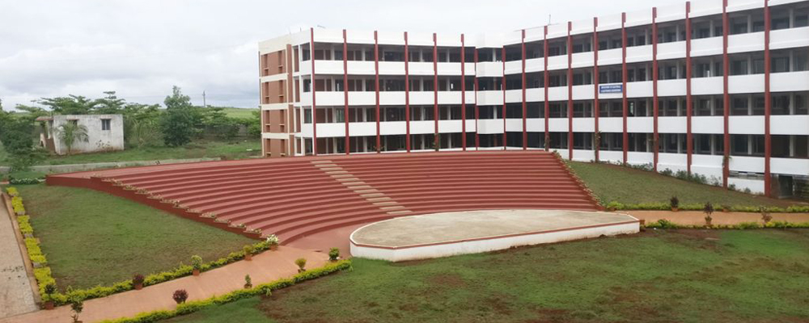

Trinity College Of Arts
Trinity Arts College, situated at the northern most end of R.G. Barooah Road, Chandmari, Guwahati-781021 is one of the most promising institutions of the state of Assam and also of the entire north-east India imparting business education at Higher Secondary, Degree and Post Graduate levels. The college was founded on 10th September in the year 1962. Starting with an enrollment of meager 300 students, the college has, over the years, attained a solid state of full-fledged growth having an enrollment of 3000 plus students and registering flourishing progress on all activities, both academic and co-curricular. The performance of the students of the college at the Higher Secondary, Under-Graduate and Post-Graduate Examinations under the Assam Higher Secondary Education Council
In India, the term "college" is commonly reserved for institutions that offer high school diplomas at year 12 ("Junior College", similar to American high schools), and those that offer the bachelor's degree; some colleges, however, offer programmes up to PhD level. Generally, colleges are located in different parts of a state and all of them are affiliated to a regional university. The colleges offer programmes leading to degrees of that university. Colleges may be either Autonomous or non-autonomous. Autonomous Colleges are empowered to establish their own syllabus, and conduct and assess their own examinations; in non-autonomous colleges, examinations are conducted by the university, at the same time for all colleges under its affiliation. There are several hundred universities and each university has affiliated colleges, often a large number.
R.G. Barooah Road, Chandmari, Guwahati-781021